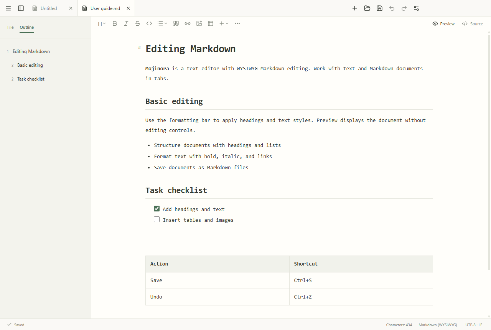

01 / MARKDOWN
Formatted and source editing
Switch between editing with visible formatting and editing Markdown syntax directly. Select text to display a formatting toolbar, or use read-only preview.
TEXT & MARKDOWN v1.0.0
Edit plain text and Markdown in the same app. For Markdown, switch between WYSIWYG editing with visible formatting and direct source editing.
v1.0.0 · Windows 11 / x64 · 111.7 MiB
Free for personal and commercial use

FEATURES
Edit text files and Markdown documents.
Switch between editing with visible formatting and editing Markdown syntax directly. Select text to display a formatting toolbar, or use read-only preview.
Use syntax highlighting, folding, rectangular selections, multiple cursors, line commands, and bookmarks. Search and replace with regular expressions, or replace across a folder with previews and backups.
Supports UTF-8, UTF-16, CP932, EUC-JP, and ISO-2022-JP. Record macros, split the editor, and compare files. Files over 50 MiB open read-only; logs over 1 GiB use partial loading and can follow appended content.
DOWNLOAD
Free for personal and commercial use
Windows 11 · x64 · 111.7 MiB
Publisher: Mojinora · Manual updates
No development tools or administrator privileges are required.
Check the system requirements and download the Windows installer.
Run the installer and review the language, terms, and destination. Select shortcuts, file associations, and the Open with Mojinora context menu.
Open Mojinora from the Start menu, then open a document or create a new one.